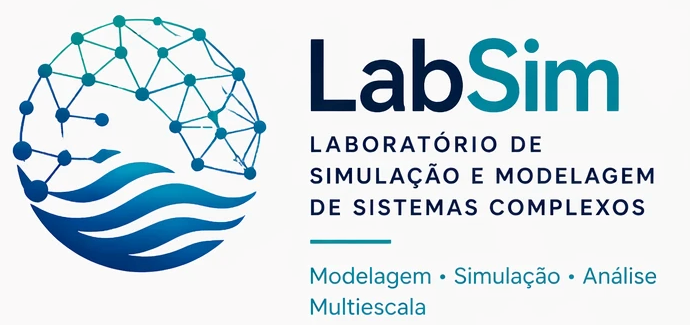

O LabSim é voltado ao desenvolvimento e à aplicação de modelos computacionais, métodos de simulação e ferramentas de análise para investigar o comportamento de sistemas complexos. Seu trabalho envolve a representação de fenômenos, a exploração de cenários, a análise de padrões e a compreensão de processos em diferentes escalas.
Uma frente do laboratório contempla o estudo de materiais estratégicos, com enfoque em terras raras e minerais críticos, buscando compreender propriedades, estruturas, processos e possíveis aplicações desses materiais por meio de modelagem, simulação e análise de dados.
Temas e frentes de trabalho
Objetivos
- Desenvolver modelos matemáticos e computacionais.
- Investigar sistemas físicos e processos complexos.
- Aplicar métodos numéricos e técnicas de simulação.
- Desenvolver ferramentas computacionais para análise de fenômenos.
- Investigar sistemas em diferentes escalas.
- Aplicar inteligência computacional à resolução de problemas científicos.
Resultados esperados
- Publicações científicas
- Modelos matemáticos e computacionais
- Softwares e ferramentas de simulação
- Formação de estudantes e pesquisadores
- Projetos de pesquisa
- Cooperação científica e tecnológica